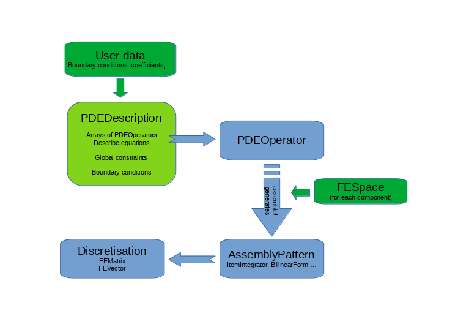

PDE Description
Purpose
Although a more manually low-level assembly of your problem is possible, it is advised to describe it in the form of a PDEDescription to get access to certain automated mechanisms (in particular concerning fixpoint solvers).
The PDEDescription has similarities with the weak form of your problem (without time derivatives that are added separately by TimeControlSolver) and in general does not need any information on the discretisation at this point.
The following flow chart summarises the assembly process during the solve. The green parts can be modified/specified by the user, the rest is handled automatically. For details on steering the solver see PDE Solvers

GradientRobustMultiPhysics.PDEDescription — Typemutable struct PDEDescription
name::String
equation_names::Array{String,1}
unknown_names::Array{String,1}
LHS::Array{Array{AbstractPDEOperator,1},2}
RHS::Array{Array{AbstractPDEOperator,1},1}
BoundaryOperators::Array{BoundaryOperator,1}
GlobalConstraints::Array{AbstractGlobalConstraint,1}
endstruct that describes a PDE system with n equations and n unknowns
A PDE system is described by
- its name
- the names of its equations
- the names of its unknowns
- a size n x n array of Array{AbstractPDEOperator,1} LHS that describes the left-hand sides
- a length n array of Array{AbstractPDEOperator,1} RHS that describes the right-hand sides
- a length n array of BoundaryOperators that describes the boundary conditions for each unknown
- an array of GlobalConstraints that describes additional global constraints
A PDEDescription mainly is a set of PDEOperators arranged in a quadratic n by n matrix. Every matrix row refers to one equation and the positioning of the PDEOperators (e.g. a bilinearform) immediately sets the information which unknowns have to be used to evaluate the operator. Also nonlinear PDEOperators are possible where extra information on the further involved uknowns have to be specified. UserData is also assigned to the PDEDescription depending on their type. Operator coefficients are assigned directly to the PDEOperators (in form of AbstractActions), right-hand side data is assigned to the right-hand side array of PDEOperators and boundary data is assigned to the BoundaryOperators of the PDEDescription. Additionaly global constraints (like a global zero integral mean) can be assigned as a GlobalConstraint.
Base.show — Methodshow(io::IO, PDE::PDEDescription)
Custom show function for PDEDescription that prints the PDE systems and all assigned operators
Creating/Extending a PDEDescription
Several add...! functions allow to extend the problems at any stage. There are several prototype PDEs documented on the PDE Prototypes page that can be used as a point of departure. Below is a list of functions that allows to initialise and extend a PDEDescription.
GradientRobustMultiPhysics.PDEDescription — MethodPDEDescription(name::String, nunknowns::Int64; unknown_names, equation_names) -> PDEDescription
Create empty PDEDescription for a specified number of unknowns.
GradientRobustMultiPhysics.PDEDescription — MethodPDEDescription(name::String) -> PDEDescription
Create empty PDEDescription with no unknowns.
GradientRobustMultiPhysics.add_boundarydata! — Methodadd_boundarydata!(PDE::PDEDescription, position::Int64, regions::Any, btype::Type{var"#s1564"} where var"#s1564"<:AbstractBoundaryType; data)
Adds the given boundary data with the specified AbstractBoundaryType at the specified position in the BoundaryOperator of the PDEDescription.
If timedependent == true, that data function depends also on time t and is reassembled in any advance! step of a TimeControlSolver.
GradientRobustMultiPhysics.add_constraint! — Methodadd_constraint!(PDE::PDEDescription, GC::AbstractGlobalConstraint)
Adds the given global constraint to the PDEDescription.
GradientRobustMultiPhysics.add_operator! — Methodadd_operator!(PDE::PDEDescription, position::Vector{Int64}, O::AbstractPDEOperator; equation_name)
Adds the given abstract PDEOperator to the left-hand side of the PDEDescription at the specified position.
GradientRobustMultiPhysics.add_operator! — Methodadd_operator!(PDE::PDEDescription, position::Vector{Int64}, O::GradientRobustMultiPhysics.PDEOperator; equation_name)
Adds the given PDEOperator to the left-hand side of the PDEDescription at the specified position. Optionally, the name of the equation can be changed.
GradientRobustMultiPhysics.add_rhsdata! — Methodadd_rhsdata!(PDE::PDEDescription, position::Int64, O::AbstractPDEOperator)
Adds the given PDEOperator to the right-hand side of the PDEDescription at the specified position.
GradientRobustMultiPhysics.add_unknown! — Methodadd_unknown!(PDE::PDEDescription; equation_name, unknown_name)
Adds another unknown to the PDEDescription.